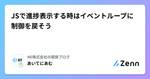
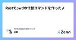
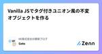
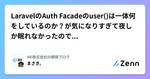
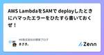
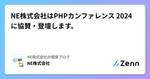
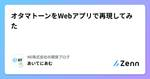
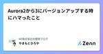

NE株式会社の開発ブログのフィード
https://zenn.dev/p/neinc_tech
NE株式会社のエンジニアを中心に更新していくPublicationです。 NEでは、「コマースに熱狂を。」をパーパスに掲げ、ECやその周辺領域の事業に取り組んでいます。 Homepage: https://ne-inc.jp/
フィード

JSで進捗表示する時はイベントループに制御を戻そう
NE株式会社の開発ブログのフィード
概要JSで進捗表示する際、適宜表示させるにはイベントループに制御を戻す必要があります。実例を交えてご紹介します。 突然ですがクイズですtargets の全要素に対して重めの処理を施すスクリプトがあります。進捗率を出すために、L5 に記載のような処理で適時進捗率を表示したいです。L9 に記載の 処理① がある場合とない場合で、何が変わるでしょうか？/** @type {Array} targets 処理対象を詰めた配列 */const targets = Array(30); // これはダミーasync function process(i) { pro...
1日前

Rustでpwdの代替コマンドを作ったよ
NE株式会社の開発ブログのフィード
!この記事は NE Advent Calendar 2024 の7日目の記事です。ハッピーホリデー。こんにちは。元エンジニアの正訓（まさくに）です。ジョブチェンジして最近はマーケの勉強とかをしています。たぶんどの仕事もそうなんでしょうけど、エンジニアであった経験は何をやるにしても役立つものだなぁと実感しています。要件を決めるときとか、フローを最適化するときとか、マネジメントのこととか、組織設計のこととかです。たぶんこれから先もエンジニアリング関係なく、色んなことをやっていくんだろうなぁと思うものの、おそらく基軸はエンジニアのような考え方で物事を進めていくのだろうと思いますし、情報...
1日前

Vanilla JSでタグ付きユニオン風の不変オブジェクトを作る
NE株式会社の開発ブログのフィード
こちらの記事は、NEアドベントカレンダー6日目の記事になります。 はじめに趣味とかでwebサイトをつくることがあるんですが、TypeScriptとかまず使わない。導入のコストが高いし、作成者以外がメンテをする場合にできなくなる可能性があります。それでも、typeみたいなものとか、不変なオブジェクトを使いたいなと思うことはあります。その時に自分が参考にするつもりのメモみたいなものを書きます。 ソースコード補足などは後述// どちらかの型を選ぶconst ALLOWED_TYPES = ['JPY', 'USD'];// 通貨データ作成関数const create...
3日前

LaravelのAuth Facadeのuser()は一体何をしているのか？が気になりすぎて夜しか眠れなかったのでコードを読んでみた。
NE株式会社の開発ブログのフィード
はじめにこんにちは、まさき。です。この記事はNEアドベントカレンダー5日目の記事になります。えっ？昨日もこの人の記事見た？ありがとうございます！突然ですが、LaravelにはFacade(ファサード)という仕組みがあり、認証系はAuth Facadeを呼び出すことで簡単に実装することができます。たとえば、Auth::user()を呼び出すとログインしているユーザーを取得することができます。では、なぜこれでログイン中のユーザーが取得できるか考えたことはありますか？私は考えたことがなかったので、今回はコードを追いながらその仕組みを解明していきます！本記事を読むことで、Aut...
4日前

AWS LambdaをSAMで deployしたときにハマったエラーをひたすら書いておくぜ！
NE株式会社の開発ブログのフィード
はじめにこんにちは、まさき。です。この記事はNEアドベントカレンダー4日目の記事になります。今年に入って業務でAWSのLambdaを触る機会がちょくちょくあり、その中にはコードだけではなくLambdaをSAMなどで作ってデプロイする機会もありました。今回は、インフラにも興味があるアプリケーションエンジニアが、Lambdaをデプロイしたときにハマったエラーを紹介しようと思います。また、LambdaのDeploy周りの知識の整理もします！本記事では、AWS LambdaをAWS SAMを使ってデプロイする際に遭遇したエラーとその解決方法について解説します。LambdaやSA...
5日前

NE株式会社はPHPカンファレンス 2024に協賛・登壇します。
NE株式会社の開発ブログのフィード
はじめにこんにちは！さくらいです。こちらの記事は、NEアドベントカレンダー3日目の記事になります🎄NE株式会社は、2024/12/22(日)に大田区産業プラザ PiOにて開催予定の「PHP Conference Japan 2024」に、シルバースポンサーとして協賛します！ PHPカンファレンスとはhttps://phpcon.php.gr.jp/2024/2000年より年に一度開催されている、日本最大のPHPイベントです。WEBサーバにインストールされているシェア8割を超える人気言語のイベントとして、初心者から上級者まで幅広い層のWEB系エンジニアが参加します。...
6日前

オタマトーンをWebアプリで再現してみた 1
1
NE株式会社の開発ブログのフィード
概要指をスライドし音色を奏でる電子楽器「オタマトーン」をWebアプリとして再現を試みたお話です。 つくったきっかけ僕には大好きな楽器があります。それは、「オタマトーン」。https://otamatone.jp/かわいい見た目からかわいい音色を奏でる、ちょっとくせがある楽器です。ひとによっては玩具とみなすかもしれませんが、僕はれっきとした電子楽器だと思っています。この子をいろんなところに連れて行き、どこでも音色を奏でたい。しかし、この子、意外と大きいんです。なかなか持ち運ぶのは難しい………そこで、この子のように演奏できるアプリが作れれば………と思い立ち、...
7日前

Aurora2から3にバージョンアップする時にハマったこと
NE株式会社の開発ブログのフィード
はじめに今年もアドベントカレンダーはじまりました！NEアドベントカレンダーの1日目の記事です！NE株式会社が自分たちの興味あるテーマについて自由に書いていきます。言い出しっぺの特権で1日目をいただいていますｗ毎年一緒に参加して盛り上げてくれる皆さんに感謝です👏 概要https://docs.aws.amazon.com/ja_jp/AmazonRDS/latest/AuroraUserGuide/Aurora.MySQL57.EOL.htmlAurora MySQL バージョン2は2024 年 10 月 31 日に標準サポートを終了しました。Aurora2から3（...
7日前

Kaigi on Rails 2024 に参加しました！
NE株式会社の開発ブログのフィード
はじめにこんにちは、エンジニアのベーやんです。2024年10月25日から26日に東京で開催された Kaigi on Rails 2024 に参加してきましたので、参加レポートをお届けします。2日間にわたって開催された Kaigi on Rails では、約40件のセッションが行われました。どのセッションもとても学びがあり興味深かったのですが、その中で特に印象に残ったセッションをいくつかピックアップします。ちなみに、NE株式会社は今回初めてスポンサーとして協賛しました。https://zenn.dev/neinc_tech/articles/kaigionrails2024-...
1ヶ月前
転職して半年だが、会社の開発部合宿について好き勝手に語らせてもらう
NE株式会社の開発ブログのフィード
はじめに入社して半年が経ちました。オンボーディング時の話はこちら。転職活動中に、面接で合宿の話をしてもらったことを思い出します。マネージャーが合宿で撮った集合写真を見せながら、「エンジニア同士でわいわいやってます！」みたいな感じでざっくりと。なにをわいわいするんだろうと当時は思いましたが、そういう文化があることだけ伝わりました。そんな自分が実際に合宿に参加してみた感想を書きます。NEの文化、会社でやる合宿に興味がある人は読んでみてください。 合宿をやる文化、そのやり方も文化この合宿より以前、一度だけ経験した会社の合宿というものを思い出してみます。（NE開発部合...
1ヶ月前
安全に倒し切るリリースをするために：15年来のレガシーシステムのフルリプレイス挑戦記
NE株式会社の開発ブログのフィード
はじめにこんにちは！あっという間に秋が終わり、クリスマスソングが流れる季節がきましたね。今回は、どうやら多くの人が苦しんでいると聞くレガシーシステムと向き合う話です。弊チームでは先日、15年来のレガシーシステムを、バグ0でリプレイス&新機能の追加リリースを実施することに成功しました！既存機能の改修ではなく、既存を大きく作り替えつつI/Oも変えるというものだったので、新しい検証方法やリリース手法を組み合わせてリスクを最小限に抑える方法をとりました。今回は、その予期せぬトラブルを未然に防ぐことができた「安全に倒し切ったリリース」についてお話します。他のプロダクトでも応用可...
1ヶ月前
Goの基礎 これわかる？ - クイズで確認するGoの基礎 -
NE株式会社の開発ブログのフィード
ねらいGo言語の基礎について把握してもらうことです。本などで学習するまえにざっと知っておいたら良さそうなことを書きます。 対象読者自分と同じようにGo言語を今から書こうと思っている人すでに他の言語は書いたことがある人基本的に「初めてのGo言語」で勉強したことを書いています。もし、同じチームの人に読んでもらうとしたら以下を勧めると思います。この記事を読んでざっとGoの基礎について知る気になった、深堀りたい部分を「初めてのGo言語」などで勉強するプロジェクトのコードを書いてみるhttps://www.oreilly.co.jp/books/97848144...
1ヶ月前
仕様変更に耐えるように"今の"DRY原則を考える
NE株式会社の開発ブログのフィード
こんにちは〜！NE株式会社のはやしまき（@_mkmk884）です🦒DRY（Don't Repeat Yourself）原則はコードの重複を減らし、保守性を高める効果的な手法ですが、適用の仕方によっては仕様変更に対応できなくなることがあります。特に弊社が開発しているネクストエンジンは多くの他サービスとも連携しているため、ネクストエンジン内の仕様変更だけでなく、外部連携サービスの仕様変更もあります。当時の仕様的にはDRY原則に沿っていたものが、時間とともに保守性を損ない、結果的にDRYではなくなり仕様変更に耐えなくなったケースについて、今回は書いていこうと思います！ DRY原則と...
2ヶ月前
あえて軽量DDDを採用した話
NE株式会社の開発ブログのフィード
NE株でJavaを書いている谷口(@taniguhey)です。弊社では、EC一元管理システムである「ネクストエンジン」以外にもいくつかサービスを展開しており、2024年1月にβ版をリリースした「encer mall」（エンサーモール）という仕入れと卸のマーケットプレイスがあります。8月1日にこれらの2つのサービスを連携するアプリ「encer mall連携 for 卸会員」をリリースしましたので、この記事は「encer mall連携 for 卸会員」（以下、連携アプリ）の開発の裏側を語る記事になります。大きな泥団子から抜け出すための軽量DDD軽量DDDを持ち込むにあたって気を...
2ヶ月前
駆け出しのエンジニアにはユーザーインタビューさせてみてよってハナシ
NE株式会社の開発ブログのフィード
はじめにみなさんこんにちは！エンジニアになって3ヶ月が経過した、まだまだひよこのマツケンです！ 今回は、駆け出しエンジニアがユーザーインタビューを経験して感じたことをお伝えしたいと思います。この記事では、以下の2つのポイントについて触れます：駆け出しのエンジニアがユーザーと関わることのメリットユーザーの視点に立ち、自分ごととして考えることの大切さこれらを共有し、駆け出しエンジニアの人たちが「会社の上司にユーザーインタビューいかせてください！って言ってみよう！」とか、駆け出しエンジニアを抱える先輩方が「お、一回ユーザーにインタビューさせてみるか！」となってくださった...
2ヶ月前
NE株式会社はKaigi on Railsに協賛します
NE株式会社の開発ブログのフィード
スポンサーやりますこんにちは、エンジニアのシュートです。NE株式会社は、Kaigi on Rails 2024にシルバースポンサーとして協賛します。 Kaigi on RailsとはKaigi on Railsのコアコンセプトは 「初学者から上級者までが楽しめるWeb系の技術カンファレンス」 です。Kaigi on Railsは技術カンファレンスへの参加の敷居を下げることを意図して企画されています。また、名前の通りRailsを話題の中心に据えるカンファレンスではありますが、広くWebに関すること全般（例えばフロントエンドやプロトコルなど）についても扱います。※公...
2ヶ月前
社内の勉強会でスクラムフェス大阪2024の動画視聴会を開催しました！
NE株式会社の開発ブログのフィード
はじめに スクラムフェス大阪とはhttps://www.scrumosaka.org/Scrum Fest Osakaはスクラムの初心者からエキスパート、ユーザー企業から開発企業、立場の異なる様々な人々が集まる学びの場です。この2日間を通じ、参加者同士でスクラムやアジャイルプラクティスについての知識やパッションをシェアするだけでなく、ここで出会ったエキスパートに困りごとを相談することもできます。 何したの？見たい人を募集して会社に集まってアーカイブ動画を視聴しました。今回は業務後の時間を使って3本の動画を視聴しました。動画を視聴しつつ感想スレに各自が感想を書いて...
3ヶ月前
レビュー指摘事項からふりかえる、良くない設計の傾向と対策
NE株式会社の開発ブログのフィード
はじめにこんにちは、まさき。です。最近、句点の使い方で自分だと特定されるようになりました（笑）。先日、インボイス対応の請求書出力機能を改修した際に、社内のつよいエンジニアにコードレビューを受ける機会がありました。エンジニアとしてさらに成長したいと感じ、PRで指摘された具体的な問題を振り返り、どのようにすれば自分でも早期に改善点に気づけるかを考えました。!この記事は株式会社GoQSystemさんとの合同勉強会でのLTの完全版です。 背景 ことのはじまり2023年10月に施行されたインボイス制度に対応するため、NE株式会社のプロダクトであるネクストエンジンでも対応...
3ヶ月前
楽に安定したテックブログを運用したい
NE株式会社の開発ブログのフィード
はじめにNEでテックブログを始めて1年以上が経過しました。テックブログの運営がしんどいと感じている方(企業)も少なくないと思います。運営としても執筆者としても、心理的負担の少ないテックブログ運営を試行錯誤してきた弊社での取り組みについて紹介しようと思います。 背景NEではテックブログを活発に運営していくために、「pre-mkmk-tech(プレもくもくテック)」と「mkmk-tech(もくもくテック)」というものを実践しています。これらを始める前は次のような流れで運営していました。運営メンバーで月1で集まり、ネタと書いて欲しい人の案を出し、大まかな記事公開日を決める...
4ヶ月前
大吉祥寺.pmにて、初プロポーザル&カンファレンス初登壇しました！
NE株式会社の開発ブログのフィード
はじめに早いもので未経験からエンジニアにジョブチェンして約2年が経ち、先日カンファレンス初登壇の機会をいただきました。今回はその時のことについて、なぜ登壇したいと思ったのか、まわりから受けたサポートなどについてお話ししたいと思います。 大吉祥寺.pmとはhttps://fortee.jp/dai-kichijojipm-2024吉祥寺.pmとは?「吉祥寺.pm」は、当初Perlのイベントとして始まりましたが、次第に参加者の多様性が広がり、プログラミング言語や、データベース、設計方法論、キャリア、勉強会開催方法など、Perlに限らず、「それぞれが発表したいことを自由に発表...
4ヶ月前